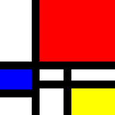
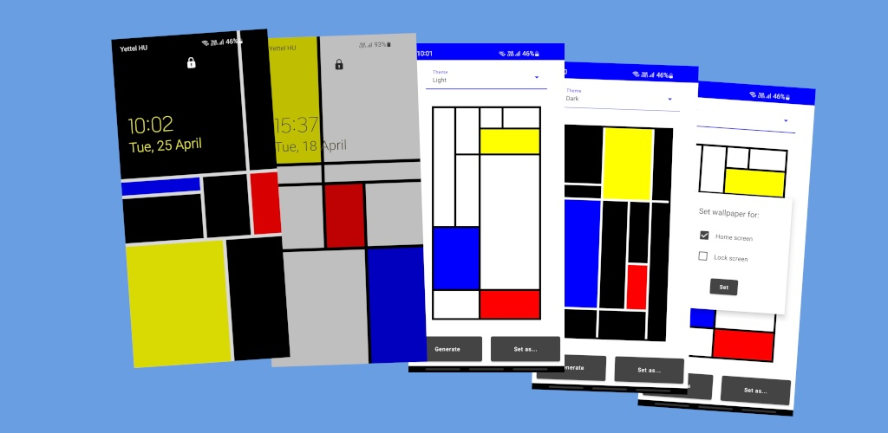

Mondrian in RandomAn Android wallpaper generator, 2023
Tap Generate to get a new composition in the style of Piet Mondrian, sized to your screen, in a light or dark theme. Set it as your home screen or lock screen wallpaper.

Lines are placed one at a time, each starting and ending on an existing line, so the grid always holds together. The enclosed rectangles are then filled with color and drawn to a bitmap. Written in Kotlin with Jetpack Compose.
And yes, Mondrian is an anagram of in random:
MONDRIAN